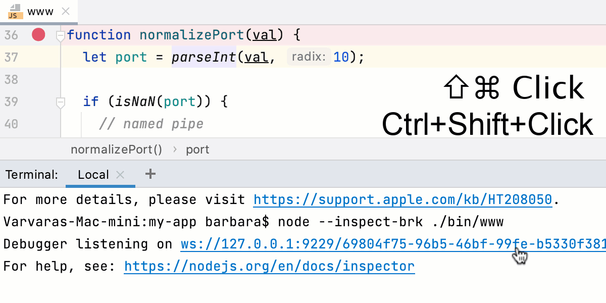

调试正在运行的 Node.js 应用程序
如果 Node.js 应用程序使用 --inspect 或 --inspect-brk 标志启动，则可以从 运行 工具窗口或 调试 工具窗口中的内置 终端 开始调试。
在显示信息消息 Debugger listening <host>:<port> 的 终端 工具窗口中，默认端口为 9229 。要开始调试，请按住 Control+Shift 并点击链接。
